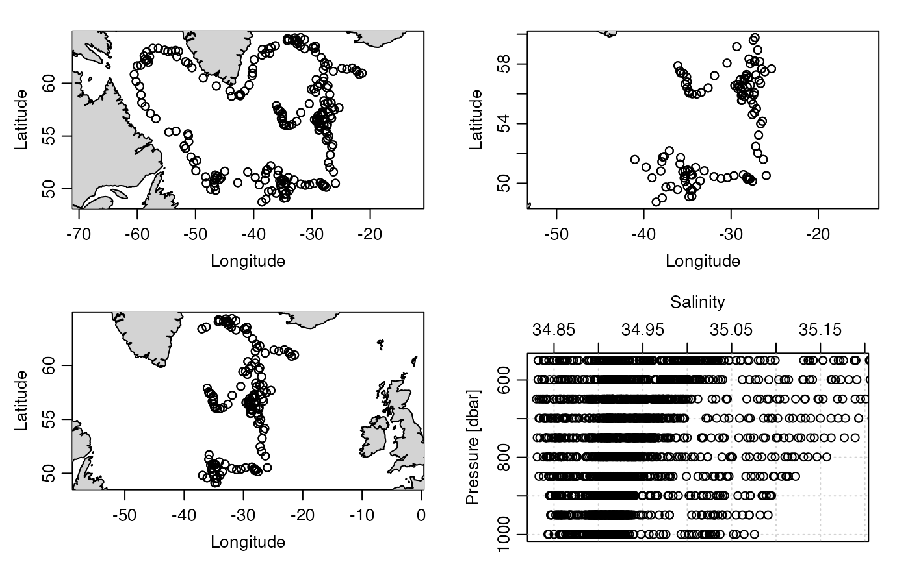
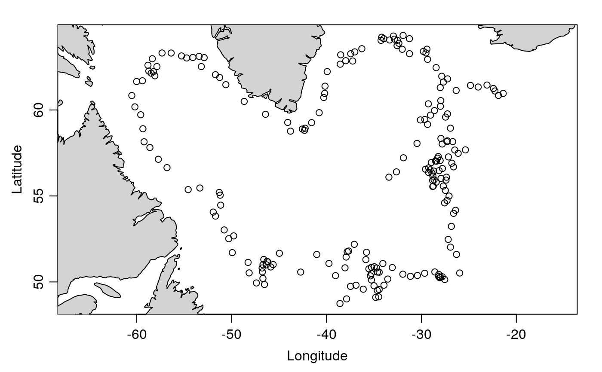
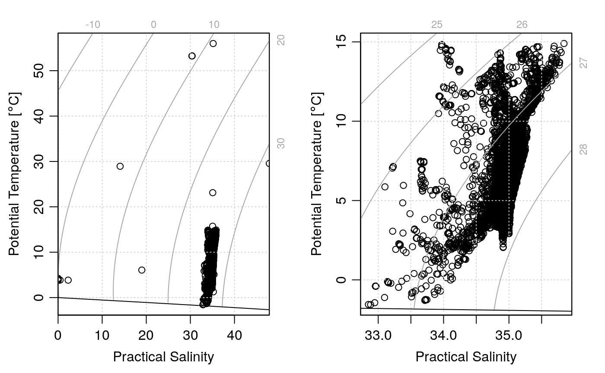

Subset an argo object, either by selecting just the "adjusted" data or by subsetting by pressure or other variables.
# S4 method for argo subset(x, subset, ...)
| x | an argo object. |
|---|---|
| subset | An expression indicating how to subset |
| ... | optional arguments, of which only the first is examined. The
only possibility is |
An argo object.
If subset is the string "adjusted", then subset
replaces the station variables with their adjusted counterparts. In
the argo notation, e.g. PSAL is replaced with PSAL_ADJUSTED;
in the present notation, this means that salinity in the data
slot is replaced with salinityAdjusted, and the latter is deleted.
Similar replacements are also done with the flags stored in the metadata
slot.
If subset is an expression, then the action is somewhat similar
to other subset functions, but with the restriction that
only one independent variable may be
used in in any call to the function, so that
repeated calls will be necessary to subset based on more than one
independent variable. Subsetting may be done by anything
stored in the data, e.g. time,
latitude, longitude, profile, dataMode,
or pressure or by profile (a made-up variable)
or id (from the metadata slot). Note that subsetting by pressure
preserves matrix shape, by setting discarded values to NA, as opposed
to dropping data (as is the case with time, for example).
Other things related to argo data:
[[,argo-method,
[[<-,argo-method,
argo-class,
argoGrid(),
argoNames2oceNames(),
argo,
as.argo(),
handleFlags,argo-method,
plot,argo-method,
read.argo(),
summary,argo-method
Other functions that subset oce objects:
subset,adp-method,
subset,adv-method,
subset,amsr-method,
subset,cm-method,
subset,coastline-method,
subset,ctd-method,
subset,echosounder-method,
subset,lobo-method,
subset,met-method,
subset,oce-method,
subset,odf-method,
subset,rsk-method,
subset,sealevel-method,
subset,section-method,
subset,topo-method,
subset,xbt-method
library(oce) data(argo) # Example 1: buset by time, longitude, and pressure par(mfrow=c(2,2)) plot(argo) plot(subset(argo, time > mean(time))) plot(subset(argo, longitude > mean(longitude))) plot(subset(argoGrid(argo), pressure > 500 & pressure < 1000), which=5)# Example 2: restrict attention to delayed-mode profiles. par(mfrow=c(1, 1)) plot(subset(argo, dataMode == "D"))# Example 3: contrast corrected and uncorrected data par(mfrow=c(1,2)) plotTS(argo) plotTS(subset(argo, "adjusted"))